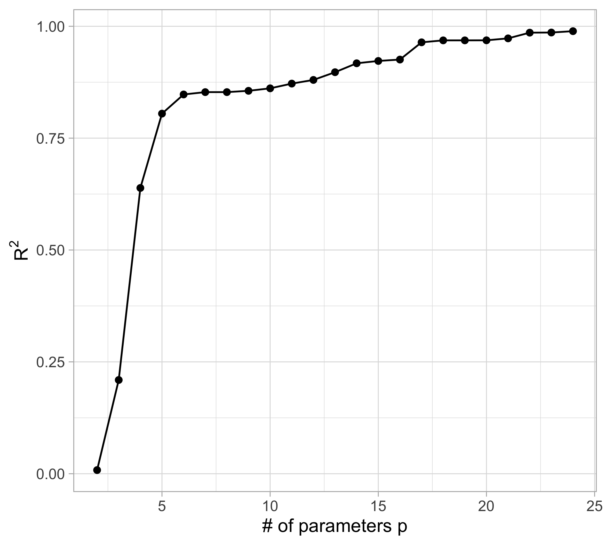
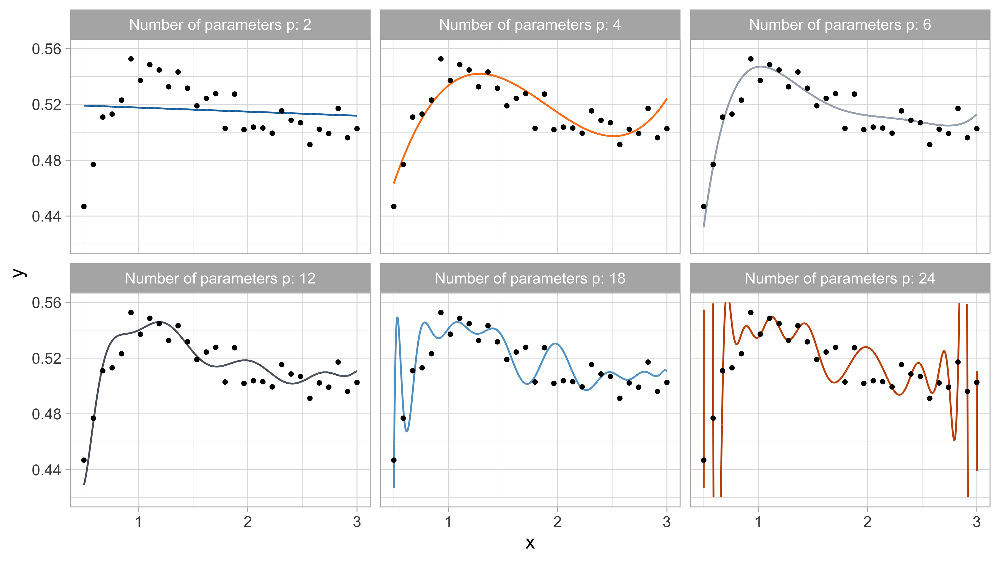
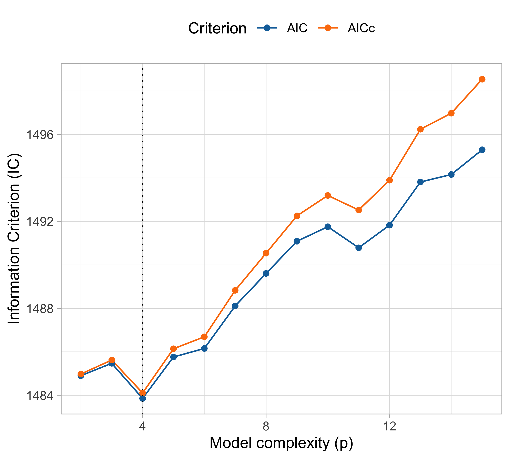
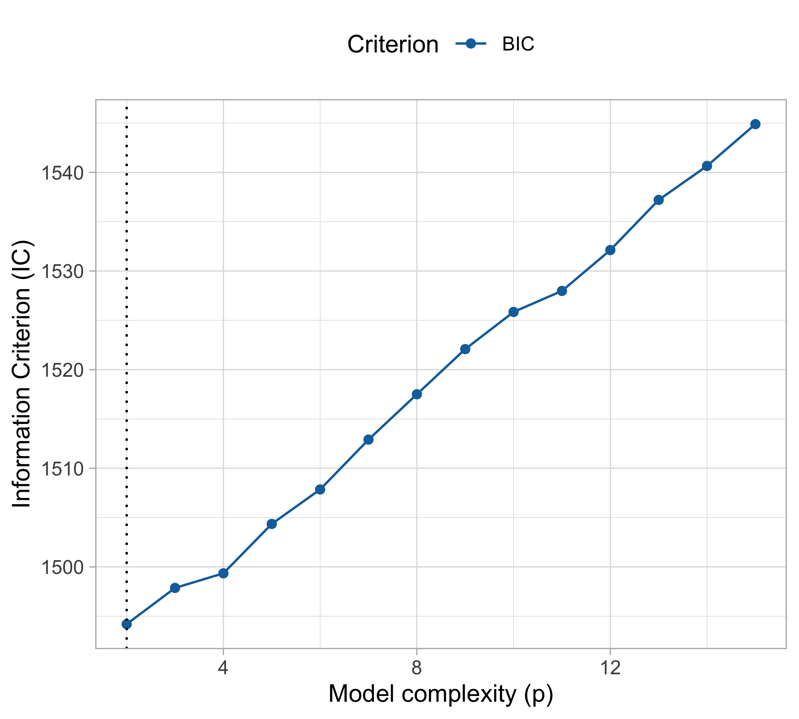

Optimism, Conflicts, and Trade-offs
Data Mining - CdL CLAMSES
Tommaso Rigon
Università degli Studi di Milano-Bicocca
Homepage
 “Pluralitas non est ponenda sine necessitate.” William of Ockham
“Pluralitas non est ponenda sine necessitate.” William of Ockham
In this unit we will cover the following topics:
- Bias-variance trade-off
- Cross-validation
- Information criteria
- Optimism
You may have seen these notions before…
…but it is worth discussing the details of these ideas once again, with the maturity you now have in a M.Sc.
They are the foundations of statistical learning.
Yesterday’s and tomorrow’s data
Yesterday’s data
Let us presume that yesterday we observed n = 30 pairs of data (x_i, y_i).
Data were generated according to Y_i = f(x_i) + \epsilon_i, \quad i=1,\dots,n, with each y_i being the realization of Y_i.
The \epsilon_1,\dots,\epsilon_n are iid “error” terms, such that \mathbb{E}(\epsilon_i)=0 and \text{var}(\epsilon_i)=\sigma^2 = 10^{-4}.
Here f(x) is a regression function (signal) that we leave unspecified.
Tomorrow we will get a new x. We wish to predict Y using \mathbb{E}(Y) = f(x).
Polynomial regression
The function f(x) is unknown, therefore it should be estimated.
A simple approach is using the tools of Unit A.1, such as polynomial regression: f(x) = f(x; \beta) = \beta_1 + \beta_2 x + \beta_3 x^2 + \cdots + \beta_p x^{p-1}, namely f(x) is approximated with a polynomial of degree p-1 (i.e. Taylor expansions).
This model is linear in the parameters: ordinary least squares can be applied.
How do we choose the degree of the polynomial p - 1?
Without a clear guidance, in principle any value of p \in \{1,\dots,n\} could be appropriate.
Let us compare the mean squared error (MSE) on yesterday’s data (training) \text{MSE}_{\text{train}} = \frac{1}{n}\sum_{i=1}^n\{y_i -f(x_i; \hat{\beta})\}^2, or alternatively R^2_\text{train}, for different values of p…
Yesterday’s data, polynomial regression

Yesterday’s data, goodness of fit

Yesterday’s data, polynomial interpolation (p = n)

Yesterday’s data, tomorrow’s prediction
The MSE decreases as the number of parameter increases; similarly, the R^2 increases as a function of p. It can be proved that this always happens using ordinary least squares.
One might be tempted to let p as large as possible to make the model more flexible…
Taking this reasoning to the extreme would lead to the choice p = n, so that \text{MSE}_\text{train} = 0, \qquad R^2_\text{train} = 1, i.e. an apparently perfect fit. This procedure is called interpolation.
However, we are not interested in predicting yesterday data. Our goal is to predict tomorrow’s data, i.e. a new set of n = 30 points: (x_1, \tilde{y}_1), \dots, (x_n, \tilde{y}_n), using \hat{y}_i = f(x_i; \hat{\beta}), where \hat{\beta} is obtained using yesterday data.
Remark. Tomorrow’s r.v. \tilde{Y}_1,\dots, \tilde{Y}_n follow the same scheme of yesterday’s data.
Tomorrow’s data, polynomial regression
Tomorrow’s data, goodness of fit

☠️ - Orthogonal polynomials
- When performing polynomial regression, the
polycommand computes an orthogonal basis of the original covariates (1, x, x^2,\dots,x^{p-1}) through the QR decomposition:
fit <- lm(y.yesterday ~ poly(x, degree = 3, raw = FALSE), data = dataset)
X <- model.matrix(fit)
colnames(X) = c("Intercept","x1","x2","x3")
round(t(X) %*% X, 8) Intercept x1 x2 x3
Intercept 30 0 0 0
x1 0 1 0 0
x2 0 0 1 0
x3 0 0 0 1- Polynomial regression becomes numerically unstable when p \ge 13 (
raw = TRUE, i.e. using the original polynomials) and p \ge 25 (raw = FALSE, i.e. using orthogonal polynomials).
☠️ - Lagrange interpolating polynomials
If the previous code does not work for p \ge 25, how was the plot of this slide computed?
It turns out that for p = n there exists an alternative way of finding the ordinary least square solution, based on Lagrange interpolating polynomials, namely:
\hat{f}(x) = \sum_{i=1}^n\ell_i(x) y_i, \qquad \ell_i(x) = \prod_{k \neq i}\frac{x - x_k}{x_i - x_k}.
- Interpolating polynomials are clearly unsuitable for regression purposes, but may have interesting applications in other contexts.
Errors, trade-offs and optimism
Summary and notation (fixed-X)
Let us better formalize the analysis we did so far, using the appropriate mathematical tools.
In the previous example we consider two set of random variables:
- The training set (yesterday) Y_1,\dots, Y_n, whose realization is y_1,\dots,y_n.
- The test set (tomorrow) \tilde{Y}_1,\dots,\tilde{Y}_n, whose realization is \tilde{y}_1, \dots, \tilde{y}_n.
The covariates \bm{x}_i = (x_{i1},\dots,x_{ip})^T in this scenario are deterministic. This is the so-called fixed-X design, which is a common assumption in regression models.
We also assume that the random variables Y_i and \tilde{Y}_i are independent.
In regression problems we customarily assume that Y_i = f(\bm{x}_i) + \epsilon_i, \qquad \tilde{Y}_i = f(\bm{x}_i) + \tilde{\epsilon}_i, \quad i=1,\dots,n, where \epsilon_i and \tilde{\epsilon}_i are iid “error” terms, with \mathbb{E}(\epsilon_i)=0 and \text{var}(\epsilon_i)=\sigma^2.
The training data is used to estimate a function of the covariates \hat{f}(\bm{x}_i). We hope that our predictions works well on the test set.
The in-sample prediction error
A measure of quality for the predictions is the in-sample prediction error: \text{ErrF} = \mathbb{E}\left[\frac{1}{n} \sum_{i=1}^n \mathscr{L}\{\tilde{Y}_i; \hat{f}(\bm{x}_i)\}\right], where \mathscr{L}\{\tilde{Y}_i; \hat{f}(\bm{x}_i)\} is a loss function. The “F” is a reminder of the fixed-X design.
The expectation is taken with respect to traning random variable Y_1,\dots,Y_n, implicitly appearing in \hat{f}(\bm{x}), and the new data points \tilde{Y}_1,\dots,\tilde{Y}_n.
The in-sample prediction error is measuring the average “discrepancy” between the new data points and the corresponding predictions based on the training.
Examples of loss functions for regression problems Y \in \mathbb{R} are:
- The quadratic loss \mathscr{L}\{\tilde{Y}_i; \hat{f}(\bm{x}_i)\} = \{\tilde{Y}_i - \hat{f}(\bm{x}_i)\}^2, leading to the MSE.
- The absolute loss \mathscr{L}\{\tilde{Y}_i; \hat{f}(\bm{x}_i)\} = |\tilde{Y}_i - \hat{f}(\bm{x}_i)|, leading to the MAE.
Quadratic loss and the mean squared error
Error decomposition (reducible and irreducible)
In a regression problem, under a quadratic loss, each element of the in-sample prediction error admits the following decomposition \begin{aligned} \mathbb{E}\left[\{\tilde{Y}_i - \hat{f}(\bm{x}_i)\}^2\right] &= \mathbb{E}\left[\{f(\bm{x}_i) + \tilde{\epsilon}_i - \hat{f}(\bm{x}_i)\}^2\right] \\ & = \mathbb{E}\left[\{f(\bm{x}_i) - \hat{f}(\bm{x}_i)\}^2\right] + \mathbb{E}(\tilde{\epsilon}_i^2) + 2 \: \mathbb{E}\left[\tilde{\epsilon}_i \: \{f(\bm{x}_i) - \hat{f}(\bm{x}_i)\}\right]\\ & = \underbrace{\mathbb{E}\left[\{\hat{f}(\bm{x}_i) - f(\bm{x}_i)\}^2\right]}_{\text{reducible}} + \underbrace{\sigma^2}_{\text{irreducible}}, \end{aligned} recalling that \mathbb{E}(\tilde{\epsilon}_i^2) = \text{var}(\tilde{\epsilon}_i) = \sigma^2 and for any i = 1,\dots,n.
Reducible and irreducible errors
We would like to make the mean squared error as small as possible, e.g. by choosing an “optimal” degree of the polynomial p-1 that minimizes it.
Let us recall the previous decomposition \mathbb{E}\left[\{\tilde{Y}_i - \hat{f}(\bm{x}_i)\}^2\right] = \underbrace{\mathbb{E}\left[\{\hat{f}(\bm{x}_i) - f(\bm{x}_i)\}^2\right]}_{\text{reducible}} + \underbrace{\sigma^2}_{\text{irreducible}}, \quad i=1\dots,n.
The best case scenario is when the estimated function coincides with the mean of \tilde{Y}_i, i.e. \hat{f}(\bm{x}_i) = f(\bm{x}_i) = \mathbb{E}(\tilde{Y}_i), but even in this (overly optimistic) situation, we would still commit mistakes, due to the presence of \tilde{\epsilon}_i (unless \sigma^2 = 0). Hence, the variance \sigma^2 is called the irreducible error.
Since we do not know f(\bm{x}_i), we seek for an estimate \hat{f}(\bm{x}_i) \approx f(\bm{x}_i), in the attempt of minimizing the reducible error.
Classification problems
The principles described for regression settings also applies to classification problems, after the appropriate adjustments. We focus here on the binary case Y \in \{0, 1\}.
In this context, the relationship between \bm{x}_i and the Bernoulli r.v. Y_i is such that \mathbb{P}(Y_i = 1) = p(\bm{x}_i) = g\{f(\bm{x}_i)\}, \qquad i=1,\dots,n, where g(x) :\mathbb{R} \rightarrow (0,1) is monotone transformation, such as the inverse logit.
Examples of loss functions for binary classification problems Y \in \{0, 1\} are:
- The misclassification rate \mathscr{L}\{\tilde{Y}_i; \hat{f}(\bm{x}_i)\} = \mathbb{I}(\tilde{Y}_i \neq \hat{y}_i), where the predictions are obtained dichotomizing the estimated probabilities \hat{y}_i = \mathbb{I}(\hat{p}(\bm{x}_i) > 1/2).
- The deviance or cross-entropy loss functions is defined as \mathscr{L}\{\tilde{Y}_i; \hat{f}(\bm{x}_i)\} = -2\left[ \mathbb{I}(Y_i = 1)\log{\hat{p}(\bm{x}_i)} + \mathbb{I}(Y_i = 0)\log{\{1 - \hat{p}(\bm{x}_i)}\}\right].
Under a misclassification loss, the Bayes rate is the error rate we would get if we knew the true p(\bm{x}_i). This is the irreducible error for classification problems.
Bias-variance trade-off
In many textbooks, including A&S, the starting point of the analysis is the reducible error, because it is the only one we can control and it has a transparent interpretation.
The reducible error measures the discrepancy between the unknown function f(\bm{x}) and its estimate \hat{f}(\bm{x}) and therefore it is a natural measure of goodness of fit.
What follows is the most important result of this unit.
Bias-variance decomposition
For any covariate value \bm{x}, it holds the following bias-variance decomposition: \mathbb{E}\left[\{\hat{f}(\bm{x}) - f(\bm{x})\}^2\right] = \underbrace{\mathbb{E}\left[\{\hat{f}(\bm{x}) - f(\bm{x})\}\right]^2}_{\text{Bias}^2} + \underbrace{\text{var}\{\hat{f}(\bm{x})\}}_{\text{variance}}.
In-sample prediction error of ordinary least squares
Summarizing, the in-sample prediction error under squared loss can be decomposed as \begin{aligned} \text{ErrF} = \sigma^2 + \frac{1}{n}\sum_{i=1}^n\mathbb{E}\left[\{\hat{f}(\bm{x}_i) - f(\bm{x}_i)\}\right]^2 + \frac{1}{n}\sum_{i=1}^n\text{var}\{\hat{f}(\bm{x}_i)\}. \end{aligned}
In ordinary least squares the above quantity can be computed in closed form, since each element of the bias term equals \mathbb{E}\left[\{\hat{f}(\bm{x}_i) - f(\bm{x}_i)\}\right] = \bm{x}_i^T(\bm{X}^T\bm{X})^{-1}\bm{X}^T\bm{f} - f(\bm{x}_i). where \bm{f} = (f(\bm{x}_1),\dots,f(\bm{x}_n))^T. Note that if f(\bm{x}) = \bm{x}^T\beta, then the bias is zero.
Moreover, in ordinary least squares the variance term equals \frac{1}{n}\sum_{i=1}^n\text{var}\{\hat{f}(\bm{x}_i)\} = \frac{\sigma^2}{n}\sum_{i=1}^n \bm{x}_i^T (\bm{X}^T\bm{X})^{-1}\bm{x}_i = \frac{\sigma^2}{n}\text{tr}\{(\bm{X}^T\bm{X})(\bm{X}^T\bm{X})^{-1}\} = \sigma^2 \frac{p}{n}.
If we knew f(x)…

Bias-variance trade-off
When p grows, the mean squared error first decreases and then it increases. In the example, the theoretical optimum is p = 6 (5th degree polynomial).
The bias measures the ability of \hat{f}(\bm{x}) to reconstruct the true f(\bm{x}). The bias is due to lack of knowledge of the data-generating mechanism. It equals zero when \mathbb{E}\{\hat{f}(\bm{x})\} = f(\bm{x}).
The bias term can be reduced by increasing the flexibility of the model (e.g., by considering a high value for p).
The variance measures the variability of the estimator \hat{f}(\bm{x}) and its tendency to follow random fluctuations of the data.
The variance increases together with the model complexity.
It is not possible to minimize both the bias and the variance, there is a trade-off.
We say that an estimator is overfitting the data if an increase in variance comes without important gains in terms of bias.
But since we do not know f(x)…
We just concluded that we must expect a trade-off between error and variance components. In practice, however, we cannot do this because, of course, f(x) is unknown.
A simple solution consists indeed in splitting the observations in two parts: a training set (y_1,\dots,y_n) and a test set (\tilde{y}_1,\dots,\tilde{y}_n), having the same covariates x_1,\dots,x_n.
We fit the model \hat{f} using n observations of the training and we use it to predict the n observations on the test set.
This leads to an unbiased estimate of the in-sample prediction error, i.e.: \widehat{\mathrm{ErrF}} = \frac{1}{n}\sum_{i=1}^n\mathscr{L}\{\tilde{y}_i; \hat{f}(\bm{x}_i)\}.
This is exactly what we already did with yesterday’s and tomorrow’s data!
MSE on training and test set (recap)

Optimism I
Let us investigate this discrepancy between training and test more in depth.
Under a squared loss function, the in-sample prediction error is \text{ErrF} = \mathbb{E}(\text{MSE}_\text{test}) = \frac{1}{n}\sum_{i=1}^n\mathbb{E}\left[\{\tilde{Y}_i - \hat{f}(\bm{x}_i)\}^2\right]
Similarly, the in-sample training error can be defined as follows \mathbb{E}(\text{MSE}_\text{train}) = \frac{1}{n}\sum_{i=1}^n\mathbb{E}\left[\{Y_i - \hat{f}(\bm{x}_i)\}^2\right].
We already know that \mathbb{E}(\text{MSE}_\text{train}) provides a very optimistic assessment of the model performance. For example when p = n then \mathbb{E}(\text{MSE}_\text{train}) = 0.
We call optimism the difference between these two quantities: \text{Opt} = \mathbb{E}(\text{MSE}_\text{test}) - \mathbb{E}(\text{MSE}_\text{train}).
Optimism II
It can be proved (see Exercises), that the optimism has a very simple form: \text{Opt} = \frac{2}{n}\sum_{i=1}^n\text{cov}(Y_i, \hat{f}(\bm{x}_i)) = \frac{2}{n} \text{tr}\{\text{cov}(\bm{Y}, \hat{\bm{f}})\}.
If the predicted values are obtained using ordinary least squares, then \hat{\bm{f}} = \bm{H}\bm{Y}, therefore \text{Opt} = \frac{2}{n} \text{tr}\{\text{cov}(\bm{Y}, \bm{H}\bm{Y})\} = \frac{2}{n} \text{tr}\{\text{cov}(\bm{Y}, \bm{Y}) \bm{H}^T\} = \frac{2 \sigma^2}{n}\text{tr} \{\text{cov}(\bm{H})\} = \frac{2 \sigma^2 p}{n}.
This leads to an estimate for the in-sample prediction error, known as C_p of Mallows: \widehat{\mathrm{ErrF}} = \text{MSE}_\text{train} + \text{Opt} = \frac{1}{n}\sum_{i=1}^n\{y_i - \hat{f}(\bm{x}_i)\}^2 + \frac{2 \sigma^2 p}{n}.
If \sigma^2 is unknown, then it must be estimated using for instance s^2.
Optimism III
Cross-validation
Another example: cholesterol data

A drug called “cholestyramine” is administered to n = 164 men.
For each man, we observe the pair (x_i, y_i).
The response y_i is the decrease in cholesterol level over the experiment.
The covariate x_i is a measure of compliance.
We assume, as before, that the data are generated according to Y_i = f(x_i) + \epsilon_i, \quad i=1,\dots,n.
The original data can be found here.
Summary and notation (random-X)
A slight change to the previous setup is necessary. In fact, there are no reasons to believe that the compliance is a fixed covariate.
We consider a set of iid random variables (X_1, Y_1),\dots, (X_n, Y_n), whose realization is (\bm{x}_1,y_1),\dots,(\bm{x}_n, y_n). This time the covariates are random.
The main assumptions is that these pairs are iid, namely: (X_i, Y_i) \overset{\text{iid}}{\sim} \mathcal{P}, \quad i=1,\dots,n.
Conditionally on X_i = \bm{x}_i, in regression problems we let as before Y_i = f(\bm{x}_i) + \epsilon_i, \quad i=1,\dots,n, where \epsilon_i are iid “error” terms with \mathbb{E}(\epsilon_i)=0 and \text{var}(\epsilon_i)=\sigma^2.
Expected prediction error
In this setting with random covariates, we want to minimize the expected prediction error: \text{Err} = \mathbb{E}\left[\mathscr{L}\{\tilde{Y}; \hat{f}(\tilde{X})\}\right], where (\tilde{X},\tilde{Y}) \sim \mathcal{P} is a new data point and \hat{f} is an estimate using n observations.
We can randomly split the original set data \{1,\dots,n\} into two groups V_\text{train} and V_\text{test}.
We call \hat{f}_\text{train} the estimate based on the data in V_\text{train}.
Then, we obtain a (slightly biased) estimate of \text{Err} by using the empirical quantity: \widehat{\mathrm{Err}} = \frac{1}{|V_\text{test}|}\sum_{i \in V_\text{test}}\mathscr{L}\{\tilde{y}_i; \hat{f}_\text{train}(\bm{x}_i)\}.
The data-splitting strategy we used before is an effective tool for assessing the error. However, its interpretation is changed: we are now estimating \text{Err} and not \text{ErrF}.
MSE on training and test (cholesterol data)
Training, validation and test I
In many occasions, we may need to select several complexity parameters and compare hundreds of models.
If the same test set is used for such a task, the final assessment of the error is somewhat biased and too optimistic, because we are “learning” from the test set.
If we are in a data-rich situation, the best approach is to randomly divide the dataset into three parts:
- a training set, used for fitting the models;
- a validation set, used to estimate prediction error and perform model selection;
- a test set, for assessment of the error of the final chosen model.
Ideally, the test set should be kept in a “vault,” and be brought out only at the end of the data analysis.
Training, validation and test II
- There is no precise rule on how to select the size of these sets; some rule of thumbs are given in the picture below.
- The training, validation and test setup reduces the number of observations that we can use for fitting the models. It could be problematic if the sample size is relatively small.
Cross-validation I
A way to partially overcome the loss of efficiency of the training / test paradigm consists in randomly splitting the data \{1,\dots,n\} in equal parts, say V_1,\ldots,V_K.
In the K-fold cross-validation method we use the observations i \notin V_k to train the model and the remaining observations i \in V_k to assess to perform model selection.
In the following scheme we let K = 5.
Cross-validation II
In the K-fold cross validation we compute for each fold k we fit a model \hat{f}_{-V_k}(\bm{x}) without using the observations of V_k.
Hence, the model must be estimated K times, which could be computationally challenging.
The error of each on the kth folds is computed as \widehat{\text{Err}}_{V_k} = \frac{1}{|V_k|} \sum_{i \in V_k} \mathscr{L}\{y_i; \hat{f}_{-V_k}(\bm{x}_i)\}, where |V_k| is the cardinality of V_k, i.e. V_k \approx n / K.
We summarize the above errors using for instance the mean, obtaining the following estimate for the expected prediction error: \widehat{\mathrm{Err}} = \frac{1}{K} \sum_{k=1}^{K} \widehat{\text{Err}}_{V_k}= \frac{1}{K} \sum_{k=1}^{K}\left[ \frac{1}{|V_k|} \sum_{i \in V_k} \mathscr{L}\{y_i; \hat{f}_{-V_k}(\bm{x}_i)\} \right].
Cross-validation III (cholesterol data)
Leave-one-out cross-validation
The maximum possible value for K is n, the leave-one-out cross-validation (LOO-CV).
The LOO-CV is hard to implement, because it requires the estimation of n different models.
However in linear models there is a brilliant computational shortcut that we can exploit.
LOO-CV (Linear models)
Let \hat{y}_{-i} = \bm{x}_i^T\hat{\beta}_{-i} be the leave-one-out predictions of a linear model and let h_i = [\bm{H}]_{ii} and \hat{y}_i be respectively the leverages and the predictions of the full model. Then: y_i - \hat{y}_{-i} = \frac{y_i - \hat{y}_i}{1 - h_i}, \qquad i=1,\dots,n. Therefore, the leave-one-out mean squared error is \widehat{\mathrm{Err}} = \frac{1}{n} \sum_{i=1}^{n} \widehat{\text{Err}}_{V_i}= \frac{1}{n}\sum_{i=1}^n \left(\frac{y_i - \hat{y}_i}{1 - h_i}\right)^2.
Generalized cross-validation
- An alternative to LOO-CV, sometimes used in more complex scenarios, is the so-called generalized cross validation (GCV), defined as \text{GCV} = \widehat{\mathrm{Err}} = \frac{1}{n}\sum_{i=1}^n \left(\frac{y_i - \hat{y}_i}{1 - p/n}\right)^2.
- The GCV is an approximate LOO-CV, in which the leverages h_i are replaced by their mean: \frac{1}{n}\sum_{i=1}^n h_i = \frac{p}{n}.
- For small x >0 it holds that (1 - x)^{-2} \approx 1 + 2x. Then, we will write \text{GCV} \approx \frac{1}{n}\sum_{i=1}^n(y_i - \hat{f}(\bm{x}_i))^2 + 2 \hat{\sigma}^2 p, \qquad \hat{\sigma}^2 =\frac{1}{n}\sum_{i=1}^n(y_i - \hat{f}(\bm{x}_i))^2, revealing a sharp connection with the C_p of Mallows.
LOO-CV and GCV (cholesterol data)
On the choice of K
Common choices are K = 5 or K = 10. It is quite evident that a larger K requires more computations.
A K-fold CV with K=5 or K = 10 is a (upwords) biased estimate of \text{Err} because it uses less observations than those available (either 4/5 or 9/10).
The LOO-CV has a very small bias, since each fit uses n-1 observations, but it has high variance, being the average of n highly positively correlated quantities.
Indeed, the estimates \hat{f}_{-i} and \hat{f}_{-i'} have n - 2 observations in common. Recall that the variance of the sum is: \text{var}(X + Y) = \text{var}(X) + \text{var}(Y) + 2\text{cov}(X, Y).
Overall, the choice is very much context dependent.
Information criteria
Goodness of fit with a penalty term
The main statistical method for estimating unknown parameters of a model is the maximize the log-likelihood \ell(\theta) = \ell(\theta; y_1,\dots,y_n).
However, we cannot pick the value of p that maximizes the log-likelihood (why not?)
We must take into account the different number of parameters, introducing a penalty: \text{IC}(p) = -2 \ell(\hat{\theta}) + \text{penalty}(p),
The \text{IC} is called an information criterion. We select the number of parameters that minimizes the \text{IC}.
The choice of the specific penalty identifies a particular criterion.
An advantage of IC is that they are based on the full dataset.
The Akaike information criterion I
Akaike suggested minimizing over p the following Kullback-Leibler divergence: \text{KL}(p(\cdot; \theta_0) \mid\mid p(\cdot;\theta)) = \int p(\tilde{\bm{Y}};\theta_0) \log{p(\tilde{\bm{Y}};\theta_0)}\mathrm{d}\tilde{\bm{Y}} - \int p(\tilde{\bm{Y}};\theta_0)\log{p(\tilde{\bm{Y}};\theta)\mathrm{d}\tilde{\bm{Y}}}, between the “true” model p(\bm{Y};\theta_0) with parameter \theta_0 and the specified model p(\bm{Y};\theta).
In the above Kullback-Leibler, for any p the value \theta is replaced by the maximum likelihood estimator \hat{\theta} = \hat{\theta}(\bm{Y}), using the data \bm{Y} = (Y_1,\dots,Y_n).
Ideally, we would select p such that the expectation w.r.t. p(\bm{Y}; \theta_0) \begin{aligned} S(p) &= 2 \: \mathbb{E}_{\theta_0}\left[\text{KL}(p(\cdot; \theta_0) \mid\mid p(\cdot;\hat{\theta}))\right] - \underbrace{2 \int p(\tilde{\bm{Y}};\theta_0) \log{p(\tilde{\bm{Y}};\theta_0)}\mathrm{d}\tilde{\bm{Y}}}_{\text{Does not depend on } p} \\ & = - 2 \: \mathbb{E}_{\theta_0}\left[\int p(\tilde{\bm{Y}};\theta_0)\log{p(\tilde{\bm{Y}};\hat{\theta})\mathrm{d}\tilde{\bm{Y}}} \right] \end{aligned} is minimized. However, we cannot compute nor minimize S(p), because \theta_0 is unknown.
The Akaike information criterion II
Although S(p) cannot be obtained, under technical conditions it turns out that \text{AIC} = -2 \ell(\hat{\theta}) + 2 p, namely the Akaike information criterion is a good estimator of S(p).
In practice, we will select the value of p minimizing the \text{AIC}, which is typically quite easy.
The factor 2 is just a cosmetic convention, which has been introduced to match the quantities appearing in the usual asymptotic theory.
More formally, it can be proved (under technical conditions) that \mathbb{E}_{\theta_0}(\text{AIC}) + o(1) = S(p), for n \rightarrow \infty.
AIC, AICc, BIC
- Akaike’s original work was followed by several other proposals, different in their assumptions and the way they approximate certain quantities.
| Criterion | Author | Penalty |
|---|---|---|
| \text{AIC} | Akaike | 2p |
| \text{AIC}_c | Sugiura, Hurvich-Tsay | 2p + \frac{2p(p+1)}{n - (p +1)} |
| \text{BIC} | Akaike, Schwarz | p \log{n} |
The \text{AIC}_c is an higher order correction of the \text{AIC} and the differences tends to be negligible for high values of n.
The justification of \text{BIC} is instead related to Bayesian statistics.
Since \log{n} > 2 for any n > 7, it means that the \text{BIC} penalty is typically stronger than the one of \text{AIC}.
AIC and BIC (cholesterol data)
An overly optimistic summary
The cholesterol data: final model (p = 4)
References
- Main references
- Chapter 3 of Azzalini, A. and Scarpa, B. (2011), Data Analysis and Data Mining, Oxford University Press.
- Chapter 7 of Hastie, T., Tibshirani, R. and Friedman, J. (2009), The Elements of Statistical Learning, Second Edition, Springer.
- Advanced references
- Rosset, S., and R. J. Tibshirani (2020). “From fixed-X to random-X regression: bias-variance decompositions, covariance penalties, and prediction error Estimation.” Journal of the American Statistical Association 115 (529): 138–51.
- Bates, S., Hastie, T., and R. Tibshirani (2023). “Cross-validation: what does it estimate and how well does it do it?” Journal of the American Statistical Association, in press.

Comments and remarks
The mean squared error on tomorrow’s data (test) is defined as \text{MSE}_{\text{test}} = \frac{1}{n}\sum_{i=1}^n\{\tilde{y}_i -f(x_i; \hat{\beta})\}^2, and similarly the R^2_\text{test}. We would like the \text{MSE}_{\text{test}} to be as small as possible.
For small values of p, an increase in the degree of the polynomial improves the fit. In other words, at the beginning, both the \text{MSE}_{\text{train}} and the \text{MSE}_{\text{test}} decrease.
For larger values of p, the improvement gradually ceases and the polynomial follows random fluctuations in yesterday’s data which are not observed in the new sample.
An over-adaptation to yesterday data is called overfitting, which occurs when the training \text{MSE}_{\text{train}} is low but the test \text{MSE}_{\text{test}} is high.
The yesterday’s dataset is available from the textbook (A&S) website: